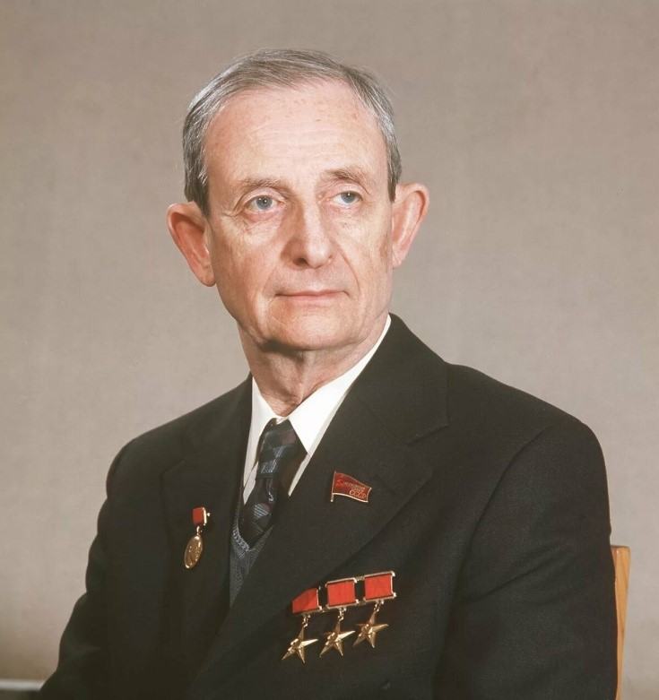
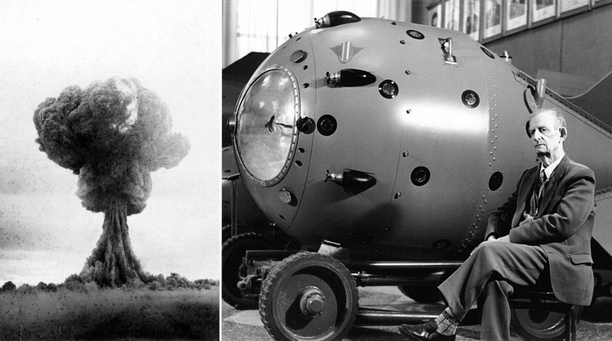

1920-х
годах Харитон работал в
Ленинградском физико-техническом институте и экспериментально доказал существование разветвленных цепных
химических реакций, что стало основой для Нобелевской премии Н.Н. Семенова.

Юлий Борисович Харитон - выдающийся советский физик-теоретик, физикохимик и главный конструктор
атомной бомбы. Его
вклад в разработку ядерного и водородного оружия был уникален. Он был удостоен трех Сталинских премий,
Ленинской премии и трижды звания Героя Социалистического Труда. В
Достижения во время ВОВ:
В 1926
году Харитон стажировался в Кавендишской лаборатории
в Англии, где под руководством Резерфорда и
Чедвика занимался регистрацией альфа-частиц и защитил докторскую диссертацию в 1928
году. Вернувшись в СССР,
он возглавил лабораторию взрывчатых веществ в Институте химической физики (ИХФ), ставшую известной школой
физики взрыва. Во время войны Харитон руководил отделом теории взрывчатых веществ,
разрабатывал новые виды
вооружений, включая противотанковые гранаты, и анализировал вооружение противника.
Вклад в ядерное оружие:
В 1943
году Курчатов привлек Харитона,
специалиста по цепным реакциям, к атомному проекту для разработки
ядерного оружия. Харитон еще до войны изучал цепное деление урана. В
1946
году было организовано КБ-11
(будущий ВНИИЭФ) для создания атомной бомбы, и Харитон был назначен главным
конструктором, а затем
научным
руководителем. Он оставался научным руководителем ВНИИЭФ 46
лет, до 1992
года, занимаясь созданием и
совершенствованием ядерного оружия.

«Я поражаюсь и преклоняюсь перед тем, что было сделано нашими людьми в 1946–1949 годах. Полуголодная и
только что вышедшая из опустошительной войны страна за считанные годы разработала и внедрила новейшие
технологии, наладила производство урана, сверхчистого графита, плутония, тяжелой воды. Через четыре года
после окончания смертельной схватки с фашизмом наша страна ликвидировала монополию США на обладание
атомной
бомбой. Через восемь лет после войны СССР создал и испытал водородную бомбу, через 12 лет запустил
первый
спутник Земли, а еще через четыре года впервые открыл человеку дорогу в космос.»
Страна высоко оценила деятельность Юлия Борисовича Харитона. Он — Трижды Герой Социалистического Труда, лауреат многих премий, награжден шестью орденами Ленина, орденами Красной Звезды, Октябрьской Революции, Трудового Красного Знамени, медалью «За оборону Ленинграда».